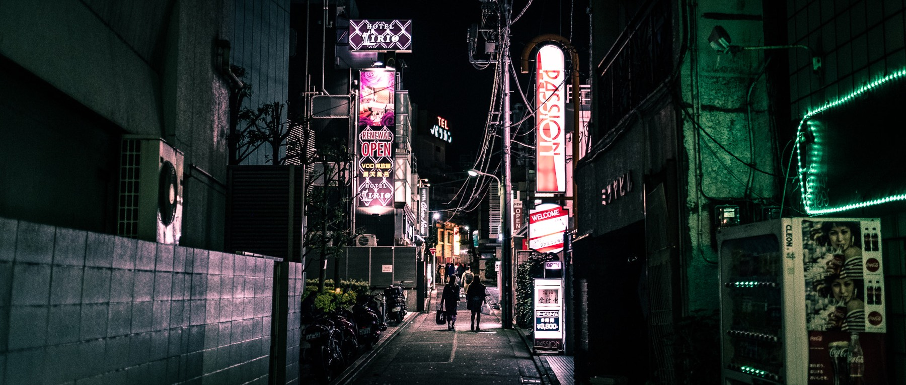
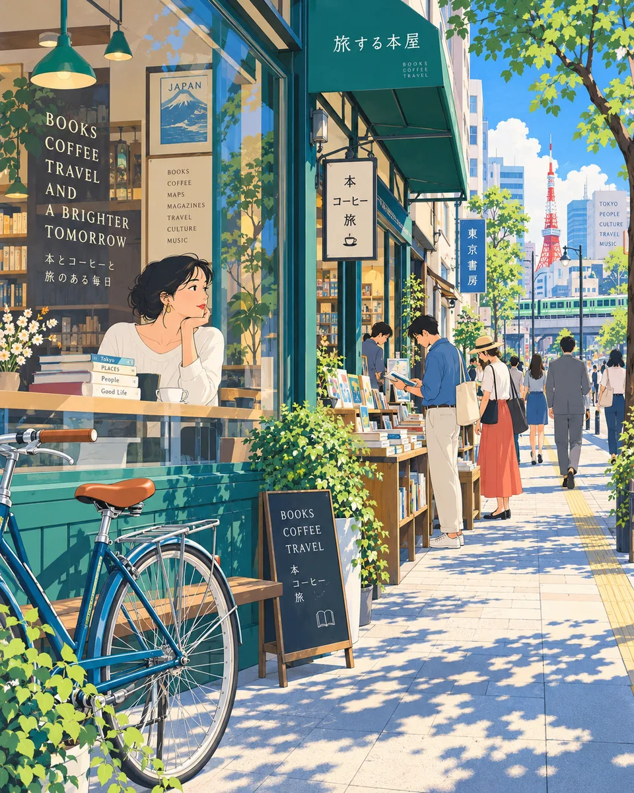

A POINT
OF VIEW.
A city changes depending on who is looking. The person, their memory, their taste, and their reasons for returning are part of the story.
ABOUT ENCOUNTER JAPAN / BEYOND THE OBVIOUS
A city is never just one story. Change the person looking at it, and a familiar street becomes something new.


Walk through the same neighbourhood with a photographer, a musician, an architect, or someone who has lived there for decades, and you will discover entirely different worlds.
A familiar street becomes something new when seen through someone else's eyes.
WHAT THIS IS / AND ISN'T
Encounter Japan is an independent culture and discovery platform exploring Japan through the people, places, and stories that give its cities character.
We are interested in more than famous landmarks and popular restaurants. We are curious about the little bookshop down a side street, the café someone has visited for thirty years, the music that fills a neighbourhood at night, and the new generation of people reshaping the places they call home.
We believe that the old and the new are equally worth discovering. A city does not lose its character simply because it changes. Its stories continue to grow.
This is not a site rename. It is the editorial attitude behind the work: look again, turn the corner, follow what catches your attention.
THE CITY DOESN'T NEED TO BE NEW. YOUR WAY OF SEEING IT DOES.
“Shakedown Street” means the good street is not always the one already framed for you. It is found through movement, curiosity, and another person's way of looking.
That idea shapes what we publish: not a ranking of the most famous places, but a collection of personal perspectives, cultural stories, and maps that make discovery tangible.
Read about someone's favourite neighbourhood. Follow a route through the places they love. Find a corner of Japan you never knew existed.
The platform joins the pleasure of reading with the usefulness of a map. Neither side is complete on its own.
A city changes depending on who is looking. The person, their memory, their taste, and their reasons for returning are part of the story.
Bookshops, bars, baths, temples, cafés, streets, and the ordinary corners between them. Places are the beginning, not the whole story.
Music, architecture, food, fashion, craft, literature, history, and daily life are not separate categories. A neighbourhood is where they meet.
Every listed place keeps its Google Maps link. Routes turn a story into a possible day out, while sources make clear what has — and has not — been checked.
WHERE THIS CAN GO
As this platform grows, we want it to become a place where people who live in Japan and people who visit can share their own ways of seeing it.
That is a direction, not a feature we pretend already exists. For now, the work begins with edited stories, ten map-checked draft routes, and 526 places whose practical information is shown with its source and status.
You do not have to be planning a trip to enjoy the journey. Sometimes, discovering how someone else sees a place is an adventure in itself.
THERE IS ALWAYS MORE TO DISCOVER
Take the long way. Read the small sign. Walk one street farther than you planned.
Open Encounter Japan ↗